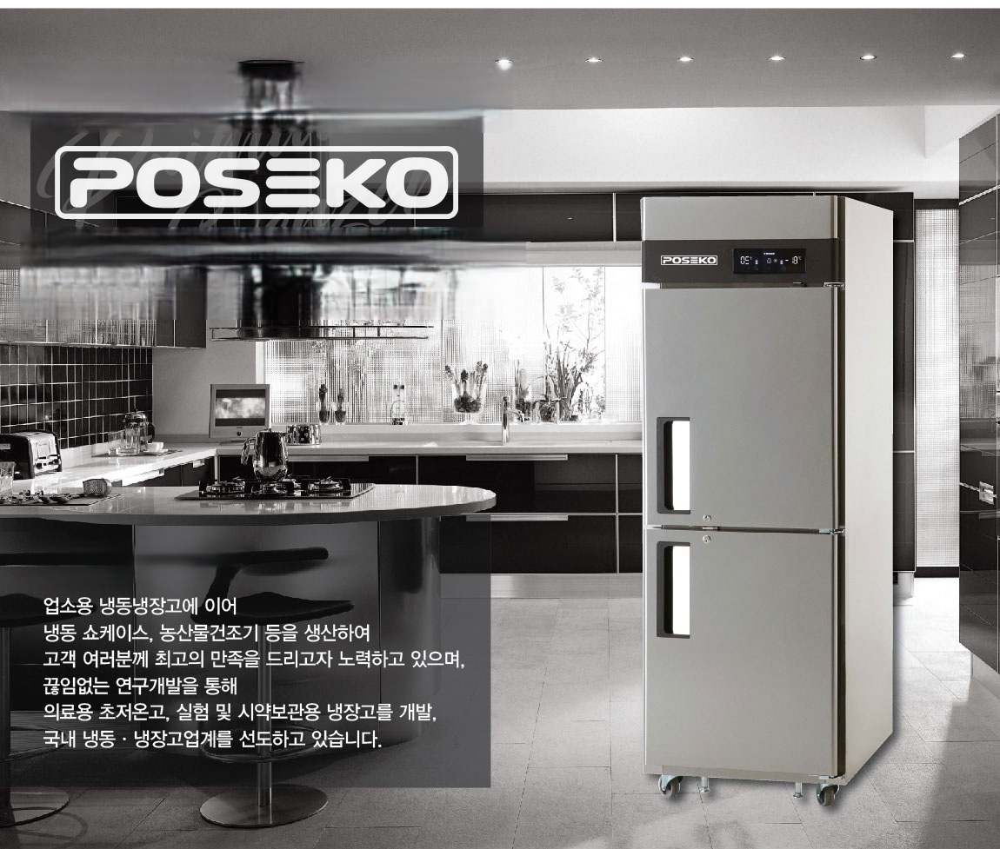
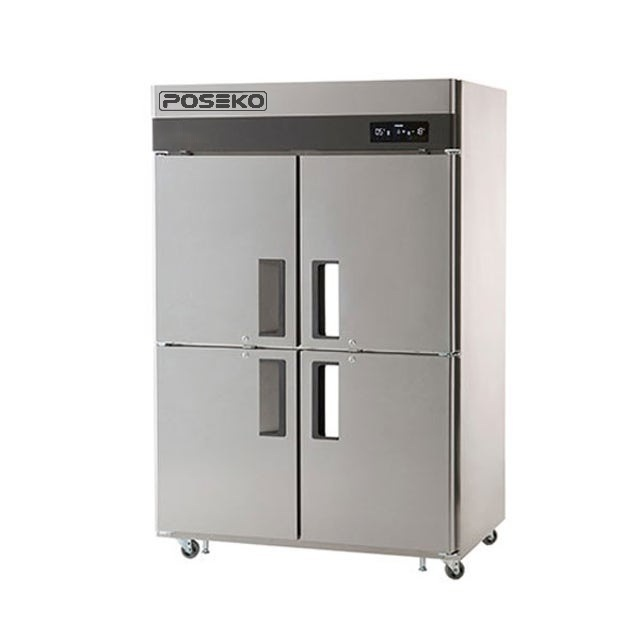
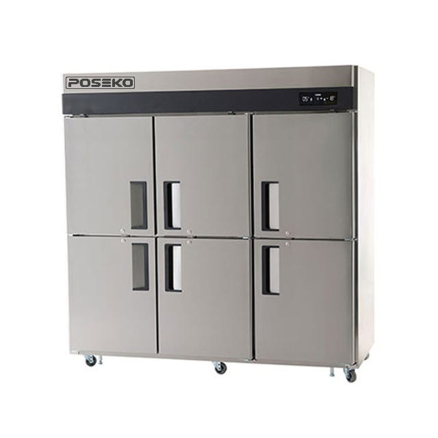
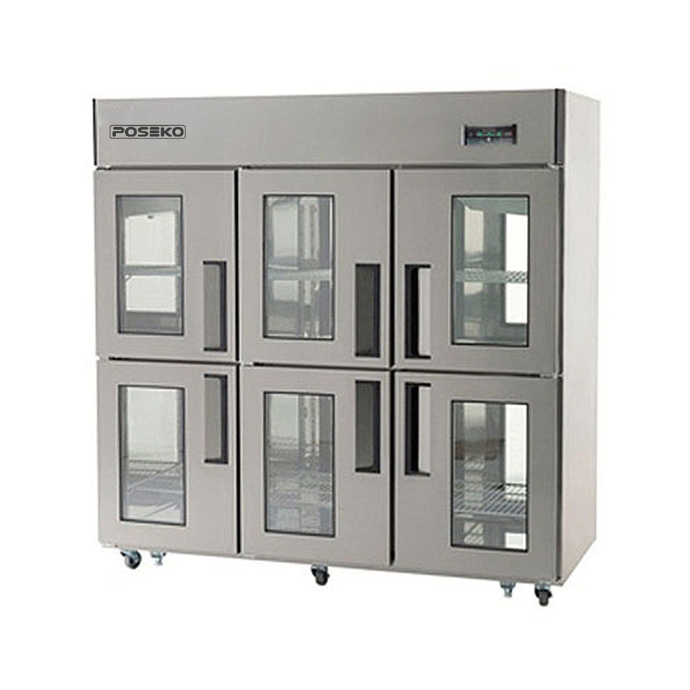
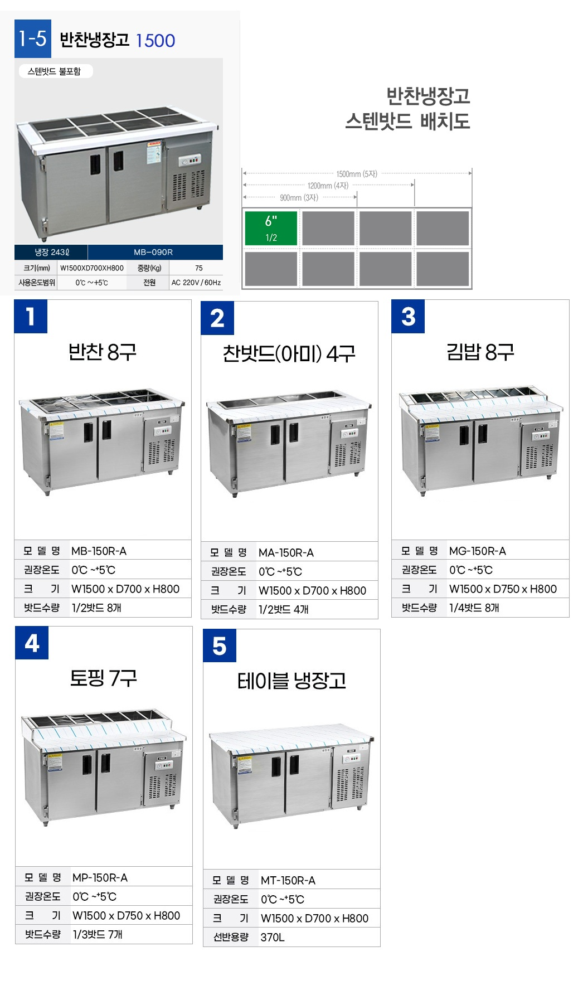
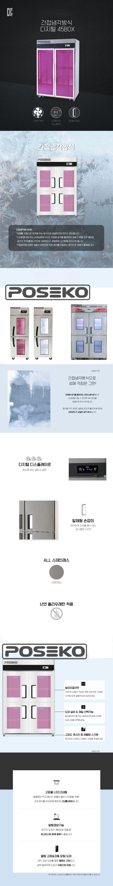
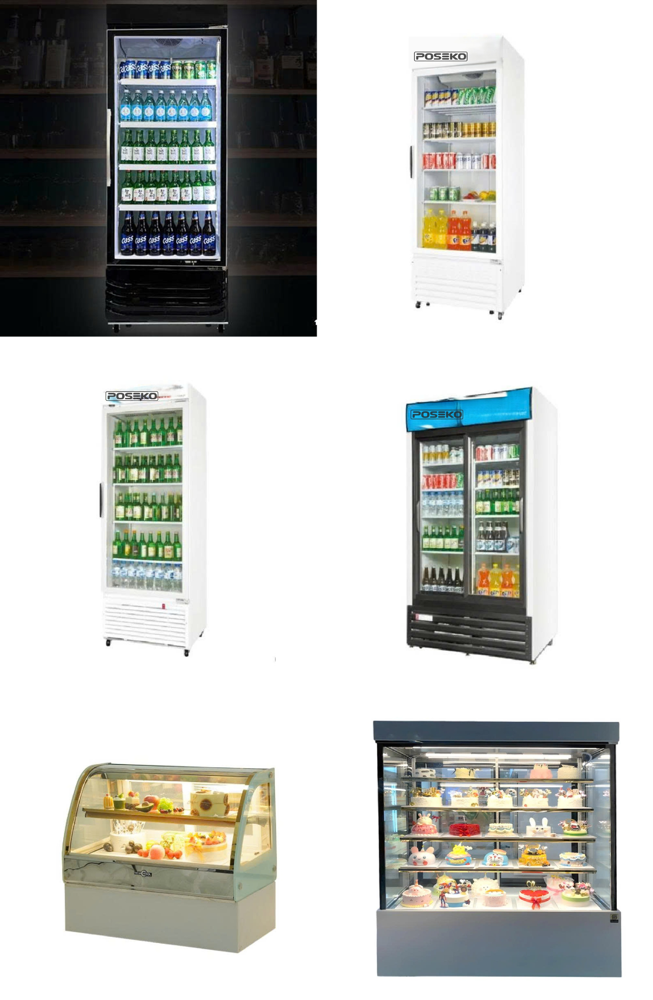

INDIRECT COOLING · DUAL DOOR
25BOX 양문형
냉장 전용 또는 냉동 전용 모델로 구성됩니다.
| 모델명 | 냉장 용량 | 냉동 용량 | 정격전력 |
|---|---|---|---|
| UDS-25RIE-2D | 510 L | – | 770 W |
| UDS-25FIE-2D | – | 510 L | 770 W |
- 외형 크기
- 655 × 800 × 1,900 mm
- 중량
- 108 kg
- 전원
- AC 220 V / 55/60 Hz 겸용
- 냉장 온도 범위
- 0℃ ~ +5℃

냉장·냉동 조합, 도어 형태와 설치 치수를 비교해 보세요.

모델별 구성을 확인한 뒤 상담을 요청해 주세요.

냉장 전용 또는 냉동 전용 모델로 구성됩니다.
| 모델명 | 냉장 용량 | 냉동 용량 | 정격전력 |
|---|---|---|---|
| UDS-25RIE-2D | 510 L | – | 770 W |
| UDS-25FIE-2D | – | 510 L | 770 W |
냉장·냉동 용량 조합에 따라 네 가지 모델을 선택할 수 있습니다.
| 모델명 | 냉장 | 냉동 | 정격전력 |
|---|---|---|---|
| UDS-45RFIE | 800 L | 240 L | 700 W |
| UDS-45VRFIE | 525 L | 514 L | 750 W |
| UDS-45RIE | 1,119 L | – | 350 W |
| UDS-45FIE | – | 1,106 L | 700 W |

넉넉한 수납 구성이 필요한 전문 주방을 위한 대용량 모델입니다.
| 모델명 | 냉장 용량 | 냉동 용량 | 정격전력 |
|---|---|---|---|
| UDS-65RFIE | 1,148 L | 518 L | 750 W |
| UDS-65RIE-2D | 1,717 L | – | 730 W |

제품 확인이 편리한 글라스 도어. 필요에 따라 글라스 도어 또는 스테인리스 도어를 선택하세요, 냉동 부분의 글라스 도어 선택은 불가.



직접냉각방식
현장 설치 전 실제 공간을 함께 확인해 주세요.
| TOPPING TABLE |
|---|
전문 주방을 위한 숙성 냉장고

음료 쇼케이스

원하시는 모델이나 주방 환경을 알려주시면 안내해 드립니다.